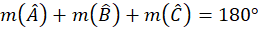
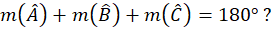

Științele exacte operează în mod frecvent cu demonstrații pentru a deduce logic noi propoziții adevărate care pot fi folosite în rezolvarea de probleme. Vom lua un exemplu din geometrie pentru a înțelege mai bine structura demonstrației.
Dorim să demonstrăm că suma unghiurilor unui triunghi oarecare este de 180°.Această propoziție a fost în prealabil demonstrată de matematicieni și a dobândit statutul de teoremă. Putem însă și noi să reproducem demonstrația, structurând-o în conformitate cu cerințele demonstrației logice.
Modul în care decurge demonstrația propusă, după cum știm de la matematică, este următorul:
Ducem o paralelă la una din laturile triunghiului, de exemplu o paralelă d prin vârful A la latura BC. Pentru că d și BC sunt drepte paralele, considerăm dreapta AB secantă. Rezultă că unghiul B și unghiul A1 (unghiul exterior triunghiului, format de dreapta d cu AB) sunt alterne interne, deci sunt congruente. Măsura unghiului B este egală cu măsura unghiului A1. Și AC este secantă, deci de o parte și de alta a lui AC se formează unghiuri alterne interne. Măsura unghiului C și măsura unghiul A2 sunt egale.
Observăm că dreapta d este compusă din 3 unghiuri și știm că suma unghiurilor care compun o dreaptă este de 180°. Suma măsurilor lui A1, A2 și A este 180°. Însă măsura lui A1 este egală cu măsura lui B, iar măsura lui A2 este egală cu măsura lui C, deci:

Demonstrație logică
În continuare vom structura raționamentul din exemplul de mai sus urmărind elementele demonstrației logice.
Teza demonstrației: Suma unghiurilor unui triunghi oarecare este de 180°sau
Fie Δ ABC oarecare,

Aceasta este propoziția posibil adevărată pe care ne propunem să o confirmăm sau infirmăm la finalul raționamentului.
Sistemul demonstrativ: Demonstrația se bazează pe geometria euclidiană, pornind de la axiomele enunțate de matematicianul Euclid în lucrarea Elementele.
Fundamentul demonstrației: Toate axiomele, definițiile și teoremele pe care le cunoașteam înainte de a face demonstrația și care ne-au ajutat în formularea raționamentelor. În acest exemplu avem: definițiile unghiului, triunghiului, dreptei, unghiului exterior unui triunghi, secantei, paralelei, congruenței. De asemenea, ne folosim de:
Axiomă: Printr-un punct exterior unei drepte se poate trasa o singură paralelă la acea dreaptă.
Teoremă: Oricare două drepte paralele formează cu o secantă perechi de unghiuri alterne interne congruente.
Procedeul demonstrativ: Toate inferențele utilizate în demonstrație pot fi formalizate din punct de vedere logic. Propoziții adevărate din fundamentul demonstrației, alături de ipotezele problemei de demonstrat, generează concluziile de care avem nevoie. Procedeul demonstrativ poate cuprinde atât raționamente cu propoziții categorice, cât și raționamente cu propoziții compuse.
De exemplu, una din inferențele pe care le regăsim în demonstrație, și care face parte din procedeul demonstrativ, este următoarea propoziție compusă în care regăsim implicația logică: Dacă (p) oricare două drepte paralele formează cu o secantă perechi de unghiuri alterne interne congruente și (q) dreptele d și BC sunt drepte paralele având secanta AB, (r) atunci unghiurile B și A1 sunt alterne interne și congruente.
Putem întâlni și următorul silogism:
Suma unghiurilor care compun o dreaptă este 180°.
Unghiurile A, A1 și A2 compun dreapta d.
Unghiurile A, A1 și A2 este de 180°.
Exemplu din logică
Un alt exemplu de demonstrație este din domeniul logicii și îl folosim în momentul în care dorim să demonstrăm validitatea unui mod silogistic pe baza legilor generale ale silogismului.
Teza demonstrației: Modul silogistic eio-1 este valid.
Sistemul demonstrativ: Logica aristotelică
Fundamentul demonstrației: Legile generale ale silogismului
Procedeul demonstrației: Compararea atributelor modului silogistic dat cu legile generale ale silogismului. Dacă o singură lege nu este respectată, atunci modul nu va fi valid.
Scriem mai întâi schema de inferență a silogismului eio-1, apoi acordăm valori de adevăr (A) propozițiilor de mai jos.
(+) MeP (+)
(-) SiM (-)
(-) SoP (+)
Silogismul valid conține trei și numai trei termeni care apare fiecare de două ori. – A
Termenul mediu este distribuit în cel puțin una dintre premise. – A
Un termen distribuit în concluzie este distribuit și în premisa din care provine. – A
Cel puțin una dintre premise este afirmativă. – A
Concluzia este în mod necesar afirmativă dacă ambele premise sunt afirmative. – A
Concluzia este în mod necesar negativă dacă una din premise este negativă. – A
Cel puțin una dintre premise este universală. – A
Concluzia este în mod necesar particulară dacă una din premise este particulară. – A
Dacă un mod silogistic este valid atunci când respectă toate legile generale ale silogismului și modul eio-1 respectă toate legile generale ale silogismului, atunci modul eio-1 este valid.